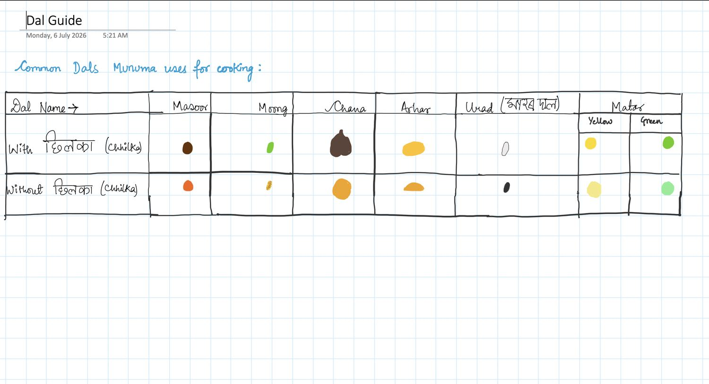

Reference
Dal Guide
Spicemasoor
Written6 July 2026
FromHer handwriting
Tagsdal · reference · chart
Common Dals Munuma uses for cooking:
| Dal Name → | Masoor | Moong | Chana | Arhar | Urad | Matar (Yellow) | Matar (Green) |
|---|---|---|---|---|---|---|---|
| With छिलका (chhilka) | dark brown | green | dark brown, whole | golden yellow | black | yellow | green |
| Without छिलका (chhilka) | orange | small yellow | golden orange | orange-yellow | white | pale yellow | light green |

Sharing its spices